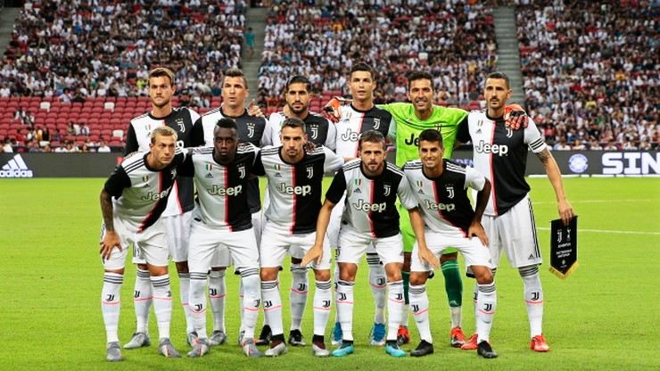

Juventus
Juventus
Juventus
Juventus Football Club SpA (znany jako Juventus lub Juve) – włoski profesjonalny klub piłkarski założony 1 listopada 1897 roku jako SC Juventus przez grupę uczniów z liceum Massimo d’Azeglio, grający od 1903 roku w biało-czarnych strojach, Zespół ma siedzibę w Turynie. Często jest przez to niepoprawnie nazywany Juventusem Turyn.Juventus jest najbardziej utytułowanym klubem w kraju – ma na koncie trzydzieści cztery oficjalne tytuły mistrza kraju, trzynaście Pucharów Włoch i siedem Superpucharów Włoch. W rozgrywkach międzynarodowych zespół zwyciężył dwa razy w Lidze Mistrzów, zdobył jeden Puchar Zdobywców Pucharów, a także trzy Puchary UEFA.
Skład Juventusu
- Bramkarze:
- Wojciech Szczesny
- Gianluigi Buffon
- Carlo Pinsoglio
- Obrońcy:
- Matthijs de Ligt
- Merih Demiral
- Leonardo Bonucci
- Daniele Rugani
- Giorgio Chiellini (C)
- Alex Sandro
- Danilo
- Mattia De Sciglio
- Pomocnicy:
- Miralem Pjanic
- Rodrigo Bentancur
- Aaron Ramsey
- Adrien Rabiot
- Blaise Matuidi
- Sami Khedira
- Napastnicy:
- Cristiano Ronaldo
- Federico Bernardeschi
- Douglas Costa
- Juan Cuadrado
- Paulo Dybala
- Gonzalo Higuaín

Osiągniecia klubu
| Rozgrywki | Razy | Sezony |
| Puchar Interkontynentalny | 2 | 1985, 1996 |
| Liga Mistrzów | 2 | 1985, 1996 |
| Liga Europy | 3 | 1977, 1990, 1993 |
| Puchar Zdobywców | 1 | 1984 |
| Superpuchar UEFA | 2 | 1984, 1996 |
| Mistrzostwo Włoch | 35 | 1905, 1926, 1931, 1932, 1933, 1934, 1935, 1950, 1952, 1958S, 1960, 1961, 1967, 1972, 1973, 1975, 1977, 1978, 1981, 1982, 1984, 1986, 1995, 1997, 1998, 2002, 2003, 2012, 2013, 2014, 2015, 2016, 2017, 2018, 2019 |
| Puchar Włoch | 13 | 1938, 1942, 1959, 1960, 1965, 1979, 1983, 1990, 1995, 2015, 2016, 2017, 2018 |
| Superpuchar Włoch | 8 | 1995, 1997, 2002, 2003, 2012, 2013, 2015, 2018 |